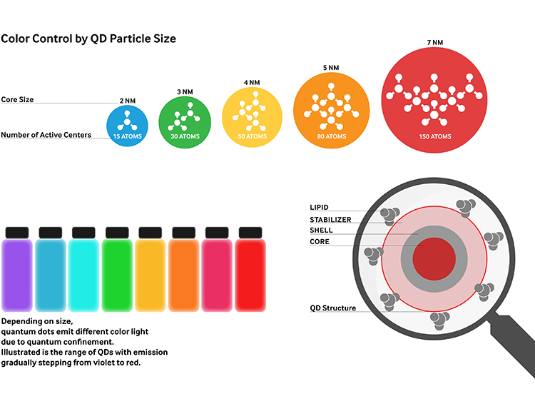
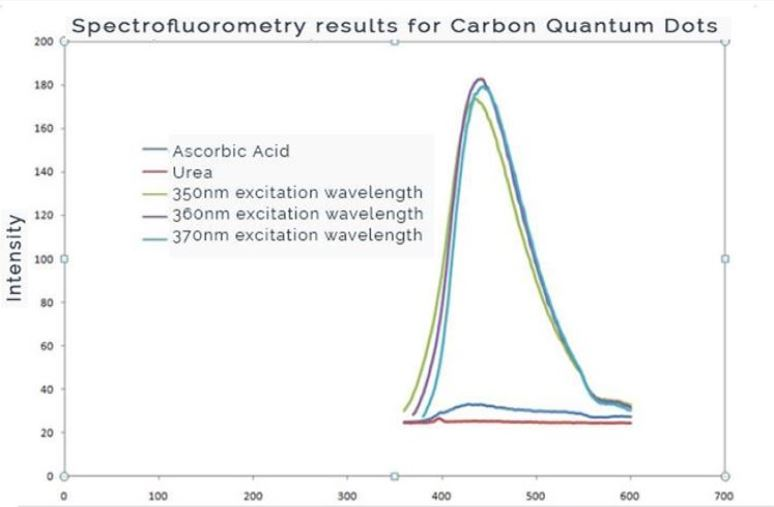
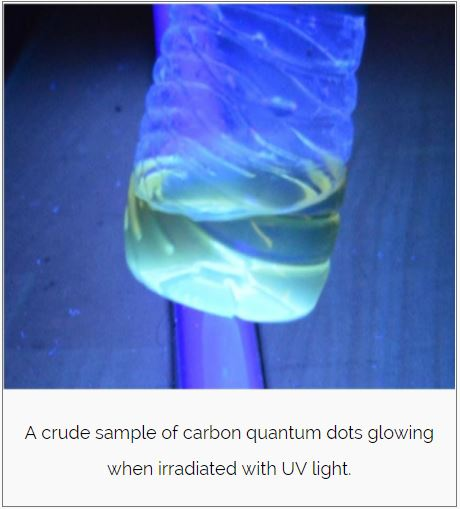
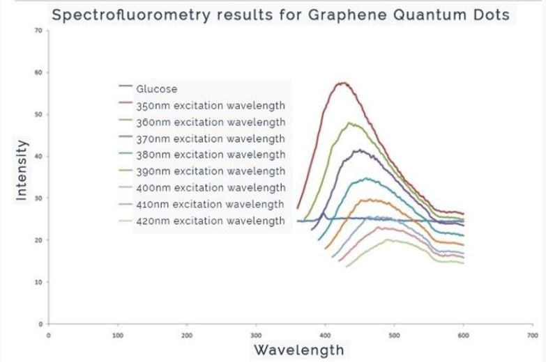
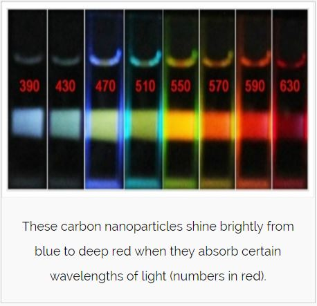

Quantum Dots are nanoparticles that emit light when electricity or light falls on them. The frequency of light and thus the colour emitted by an excited quantum dot depends inversely on the size of the particle. For this project, I led a group of three members to synthesize and study properties of Carbon and Graphene Quantum dots. I was also responsible for poster design. Our team won the best poster award at the ThinkNano Symposium 2016, Indian Institute of Science
Team Members: Tanuja Sawant, Samyukta Ramnath, George Joseph
Duration: 1 week
Link: Poster
Skills used: Leadership, Experimental Nanoscience, Photoshop
PROCESS

LITERATURE REVIEW
SYNTHESIS AND STUDY
The carbon quantum dots were synthesized by hydrothermal treatment of 0.8g Urea and 1g Ascorbic acid with appropriate amount of distilled water as solvent. The mixture was heated at 1500 C in a Teflonlined stainlesssteel autoclave for a period of 5 hours and subsequently allowed to cool naturally.
Graphene Quantum Dots (GQD) were synthesized by boiling a mixture of 1g glucose and 100 μl ammonia at 100 0 C until a yellowbrown colour was observed. The CQDs and GQDs thus obtained were studied with a Spectrofluorometer.
The plots below depict observations from the study. It was found that wavelength corresponding to peak intensity is independent of excitation wavelength in case of Carbon Quantum Dots but dependent on excitation wavelength for Graphene Quantum Dots. Additionally, these quantum dots were studied using a cyclic voltammetry device.
   POSTER DESIGN
I designed the poster using Adobe Photoshop. The concepts and applications of quantum dots have been explained on the poster. A demonstration of methods of synthesis and study was given during the poster presentation.
SYMPOSIUM PRESENTATION
Our audience received the presentation well as the poster was not cluttered with too many technical details. The audience was able to comprehend the subject better than other poster presentations because we chose to deliver the technical details through a demonstration. Adopting this technique won us the first prize!